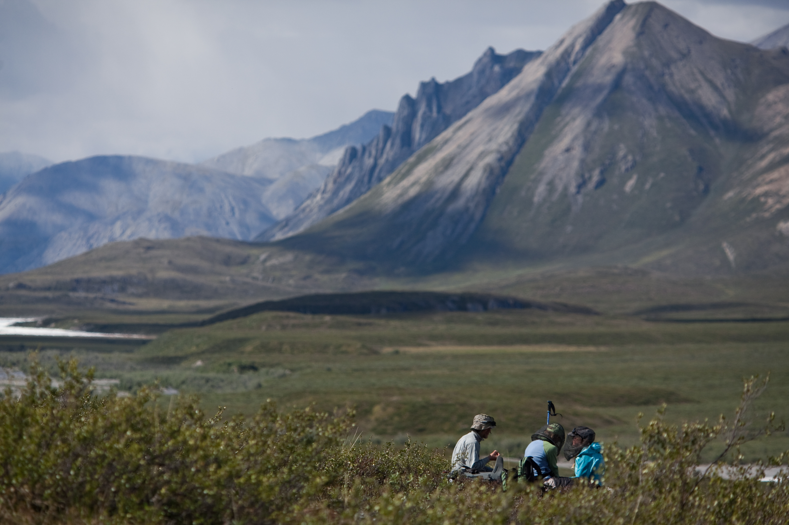
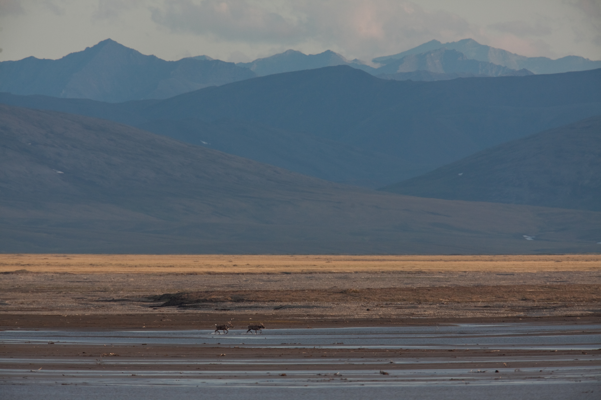

Caribou spill from the hills and instantly my upset stomach is forgotten. I stare through binoculars slack-jawed as they pour like water from the Brooks Range down onto the river ice. Thousands fill the basin, their bodies steaming in the weak June light. As a single being they move towards the canyon, hooves striking at the ice, only to turn back afraid to move forward. Their wild dash has slowed into a muddle of brown bodies gyrating in upon itself.
I stare mindlessly into our small driftwood fire. Flames dance like gypsies and sparks fly into the night — a night that defies the very definition of itself. I turn my face to the sun willing its weak rays to warm my body. It slides languidly along the horizon full orbed and orange. I am on watch. Two hours to meditate, write, pray, simply be. If I listen carefully I can hear the earth breathe as it sleeps. The Kongakut gurgles over the smooth black stones and the wind hums steadily as it searches the tundra. The air is cold and light on my exposed cheeks. It’s almost as though there is less air at the top of the world. I delight in the idea, twirling it through my mind. One by one my fingers go numb. I alternate between curling them inside my coat and holding them out to the fire. So far I have seen no Grizzly bears, but I am sure that they will come. As my watch beeps 2 a.m. I go and wake my mom. Handing her a mug of steaming hot chocolate, I leave her with the Ruger .454 Magnum and bear spray and happily crawl into my sleeping bag. Tying a bandana around my eyes to block out the light I drift off to sleep and dream of caribou.
I think about the caribou and their bellies full of flesh and blood, their run across Alaska. How hard and overwhelming that journey must be and yet how every year they persist and endure its hardships. Shoulders forward I lean a little harder into my rope.
Mosquitoes drive me mad. I inwardly shudder at the high pitched buzzing telling of their immanent approach and my skin crawls with the thought of the quarter size lumps they always leave me with. This poses a definite problem for me, for in the arctic mosquitos will cover a patch of uncovered skin so thickly they are standing five deep waiting their turn to get a taste of my oh-so-sweet blood. I was fully aware when I signed on for this trip that I would have to deal with the pests; regardless, I am ashamed to say that on one hot and sweltry afternoon they got the better of me. My mom, dad and I decided to attempt scaling a rocky pinnacle, which threw itself some two thousand feet from the valley floor into the cloudless blue of the sky. Scrambling into my tent I threw on my head net and donned rain gear –- Gortex being the only decent protection against the mozies, and we set out into the bush at a swift pace.

Our efficient clip soon became and arduous scramble as the ground turned to mush from last night’s rain and the terrain became steep. To make matters worse, the bushes effectively created their own microclimate making it unbearably humid and I began to sweat. One thing you should know about me. I hate overheating. So without hesitation I stripped off my coat and secured it around my waist like any good tourist. When the mosquitoes began to show up in hoards I simply gritted my teeth and continued to struggle up the mountain. Moments later I went raving mad.
I lost all sense of my humanity and began to act as any animal would. A primordial noise, some sound between a groan and a growl leaked out of my lips. My arms began to flail helplessly about my head as if windmilling them about might keep me out harm’s way. When this failed I did the only thing left to do. I satisfied my primal urge to escape and simply fled. Topping out on the ridge I scrambled the last few rocky feet to the pinnacle and collapsed. The wind tore through my clothes soothing the large red welts covering my body and washed away any of the remaining attackers.
My parents approached slowly, gazing at me in wonder and not without a hint of amusement. My dad’s lips twitched into a poorly suppressed grin, “Why didn’t you just put your jacket back on?” I roll my eyes towards him like a frightened animal and shrugged. It never really occurred to me.

We sit quietly as the river carries us towards the sea. Dall sheep graze on the hills or sunbathe on the dark canyon walls overhead. Light dances through the glacial water, clear as glass, and plays with the stones far below. A breeze pushes us, gently blowing strands of unwashed hair into my eyes. I trail my fingertips through the water tempting the Arctic Char and Grayling to come take a nibble. It is a rare sunny day and the sunbaked tundra lends a rich and heavy scent to the air, something like ancient earth and salty seawater. We must be getting close to the coast. Wild flowers blanket the shore. Small starred Forget-me-Not’s the color of the sky on a warm summer day, Bearberries with delicate purple bells, others with intricate orange tendrils that reach for the sky, and my favorite, Arctic Poppies, bold and bright their yellow dresses sway about their stems in the breeze. Like a patchwork quilt the tundra flowers hug the contours of the land.

I nearly fall out of my boat when a caribou comes careening into my line of sight and launches herself into the river. I stare wide-eyed as she swims like her life depends on it for the far shore. She isn’t more than twenty yards from the front of my boat. I can make out her nostrils flaring as she struggles to propel herself through the rushing water. Her eyes are rolled back in her head, showing the brilliant white of her inner eye. Clearly she is terrified. It’s odd to me that if we scared her so badly her escape route would bring her so directly in line with our path...
We are an oil hungry world and currently our energy use is dependent on the black gold we suck from the earth. There is a lot of oil under the Arctic National Wildlife Refuge, so why not drill there? One word: Caribou. The caribou play a central roll in this true pristine wilderness landscape, something increasingly rare in our world. By hosting the fly larvae and allowing them to mature under their own skin they effectively supply thousands of migrating bird species with sustenance. Their individual lives are given into the circle of life feeding the great grizzlies and the endangered Grey Wolf. The United States government is currently mulling over whether or not to drill for oil in the Arctic, an action that would greatly threaten the survival of the Porcupine Caribou heard. Human ingenuity can find alternative energy but it can never replace the wilderness and natural species found there.
A deep melancholy settles on my heart and I cannot help but wonder, how much will be lost if we lose the caribou?
-----
Jess Lewis grew up adventuring in the small mountain town of Buena Vista, Colo., with Outward Bound instructor parents. A few years back, she and her family repeated a trip her farther took when he was 12. He and his Aunt were the first people to run the Kongakut river in the Arctic National Wildlife Refuge and so we went back to repeat it. This piece is about that experience, the way that landscape shaped her and, especially, the way the caribou have influenced her life.